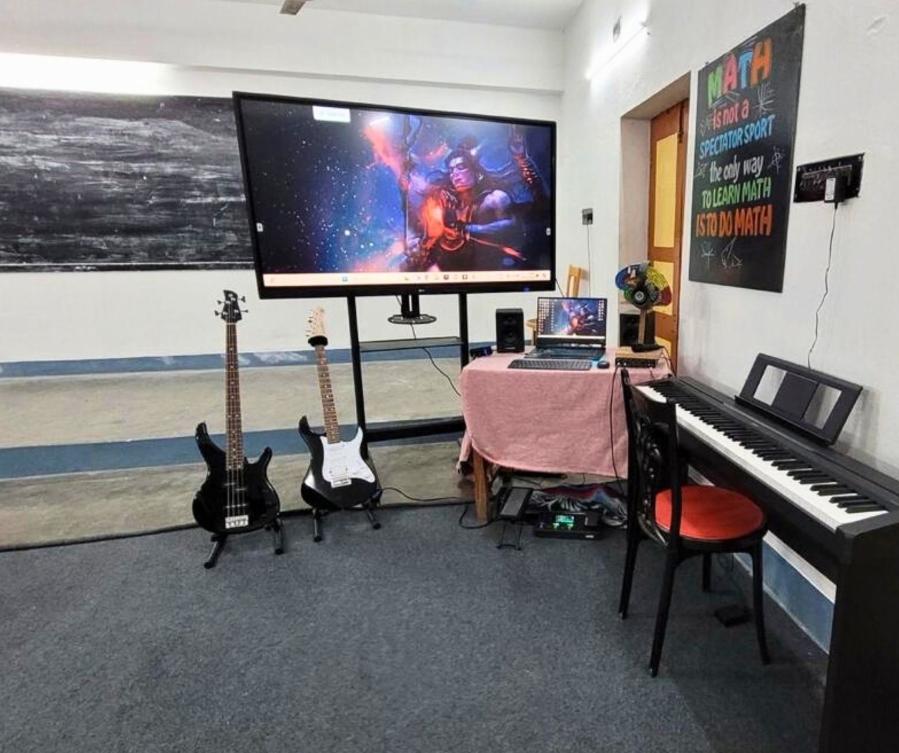
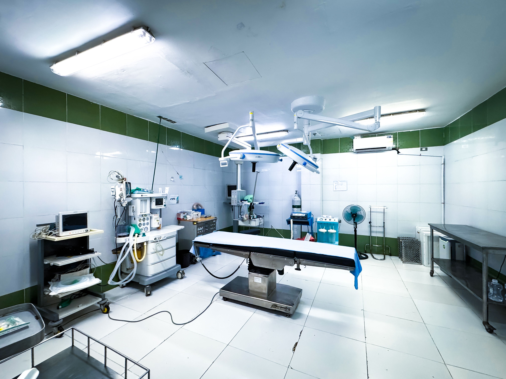

Five parts of the same work
Everything we do fits into five parts — education, sports, music, health, and care for the land. Each one is built with the community, tested as we go, and shaped by what actually helps.
Chapter I — Education
Building Minds, Shaping Futures
Education isn't something we hand out — it's something every child deserves a real shot at. Tatwamasi Foundation runs Aditi Institute of Excellence (extra support and advanced learning for students who are ready to go further and are not able to get access to quality school education) and the upcoming Aditi VidyaNiketan School (a full school built around life-skills, not just marks). Together, they help a child grow into someone who thinks clearly, works hard, and knows who they are.

Chapter II — Sports
Discipline, Teamwork, Excellence
Through Aditi Institute of Sports, we help young people become strong players — and stronger people. Our coaching in Cricket, Football, and Yoga & Fitness is built step by step, so kids grow their stamina, focus, and character as they go.

Chapter III — Music & Culture
Awakening Creativity, Keeping Culture Alive
Music matters as much as books do. At Aditi Sursadhanaloy, we keep India's musical traditions alive while giving young people room to find their own voice — through vocal ragas, Indian classical instruments (Tabla, Sitar), Western instruments, dance, and theatre. It builds confidence, pride, and a way to say what words sometimes can't.

Chapter IV — Healthcare
Caring for Health, Caring for Tomorrow
No child should suffer from an illness that's easy to treat. No family should have to travel far for basic care. Tatwamasi Foundation runs regular medical camps in small towns like ours where good healthcare is still out of reach, teaches preventive health, and is building an integrated health facility for the years ahead. We work with real doctors who understand and respect the community they're serving.

Chapter V — Environment & Community Care
1) Environment: Looking After What Feeds Us
We look after the land that our community depends on — planting trees, saving water, and helping farmers work smarter. We work with local farmers on better irrigation, restore community ponds, and plant fruit trees that hold the soil and give families a second source of income.
2) Food & Clothes Drives
Dignity starts with the basics. Through our donation drives, we get clean clothes, warm blankets, and proper food kits to families who need them most — especially when crops fail or winter hits hard.